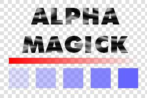

32-bit PNG with alpha channel
background generated by PerlMagick
Result
|  | + | = | |
|
|
32-bit PNG with alpha channel
|
|
background generated by PerlMagick
|
|
Result
|
This page provides a simple example of using ImageMagick to overlay a transparent logo onto a generated background. I've frequently used this to create logo images for Web pages where the users can specify their own colour scheme; site colours are defined using a server-side script which produces a stylesheet based on their preferences, and variations on this script are used to re-generate logo images when they change their colour scheme. (Of course, if Microsoft would stop treating PNG support as some kind of joke, it wouldn't be necessary... but as long as the world+dog insist on using IE despite it's lack of alpha support, this script is a fairly effective work-around.)
A working install of PerlMagick - the examples here were generated using my PPM build of PerlMagick 5.4.0 running on ActivePerl 618 under Windows 2000 Professional, but should work on any PerlMagick installation with PNG support. I believe PNG support is compiled in by default; I certainly didn't have to explicitly enable anything during the build process.
A 32-bit PNG file with alpha transparency. You can download logo.png (used in these examples) here - do a right-click and 'Save As...' otherwise your browser will probably just display the image. In my experience, PNGs generated by Macromedia Fireworks 4 work perfectly, and those exported by Corel PhotoPaint 9 don't work at all 'cos Corel's alpha support is broken. You might need to experiment. I'd be interested to hear from anyone trying this technique using PNGs from PhotoShop or the GIMP.
logo.png starts out looking something like the left-hand image above - depending how your editor depicts transparency. What the script does is to generate a background, read this image, compose it over the background (preserving the transparency) and write the results as a JPG.
#!/bin/perl # # Image composition with alpha transparency demo. # logo.png (32-bit PNG with alpha channel) is required. # # http://www.dylanbeattie.net/magick/composite/
use Image::Magick;
# Create background image - a 300x200 white-to-black gradient
$background=Image::Magick->new;
$logo = Image::Magick->new;
$background->Set(size=>'300x200');
$background->Read("gradient:white-black");
# Read the transparent logo from the PNG file
$logo->Read("png:logo.png");
# Call the Composite method of the background image, with the logo image as an argument.
$background->Composite(image=>$logo,compose=>'over');
$background->Set(quality=>100);
$background->Write("jpg:output.jpg");
# Clean up
undef $background;
undef $logo;
The information and examples on this page may be freely distributed,
modified, hacked, sold and
otherwise used without restriction subject to the terms
of the ImageMagick license agreement.
Feedback, comments and contributions to imagemagick [at] dylanbeattie [dot] net
ImageMagick and PerlMagick are Copyright © 2001 ImageMagick
Studio
http://www.imagemagick.org/
{kind=link}